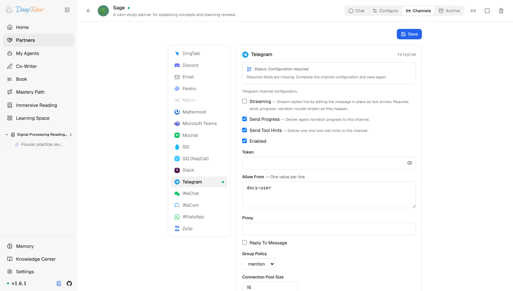

夥伴與管道Telegram
DeepTutor 接入 Telegram 教學！BotFather 1 分鐘註冊，無需對外 IP，回覆原地串流輸出！｜零度解說
為 Partner 設定 Telegram channel —— BotFather 註冊、Bot API long polling、原地編輯的串流回復。
原文連結：https://docs.deeptutor.info/zh-cn/partners/telegram/
想在 Telegram 上給自己搭一個 AI 助手？最近後台問這個的朋友特別多。
DeepTutor 的 telegram 管道，走的是 Bot API 長輪詢（long polling）：DeepTutor 用一個長連線迴圈主動從 Telegram 伺服器拉取更新，所以不需要對外 IP、不需要網路鉤子（webhook）、也不需要反向代理。
在 BotFather 註冊機器人（bot），大約 1 分鐘就能搞定。想做個人助理或小群 bot，Telegram 是接入最快的管道，太方便了。
如果你當初跟我一樣，以為接 Telegram 必須有對外網路伺服器、還要自己寫一堆回呼，那看到這裡可以放心了，上面這些統統不用。
這個管道還支援串流輸出（Streaming）：開關開啟後，bot 只發一條訊息，隨著回覆生成不斷原地編輯這條訊息。

Partner 執行時先看卡片即時狀態：它應顯示輪詢監聽器（listener）已連線/執行；只有失敗狀態需要更多細節時再查日誌。
一、安裝依賴
Telegram 支援隨 Partners 可選元件（extras）一起安裝。底層使用者端是 python-telegram-bot[socks]，SOCKS 代理支援已經內建，不需要額外裝任何東西。
pip install -e ".[partners]"
# 或发布包支持 partners extras 时：
pip install "deeptutor[partners]"二、在 BotFather 註冊 bot
- 開啟 Telegram，搜尋
@BotFather，開始對話。 - 傳送
/newbot。BotFather 會先問顯示名稱（比如Math Mentor），再問 username，必須以bot結尾（比如hku_math_mentor_bot）。 - BotFather 回覆一個 HTTP API token，形如
123456789:ABC-DEF1234ghIkl-...。複製好，這就是要填進 Token 欄位的值。 - 查自己的使用者 id：和
@userinfobot對話，它會回覆你的數字 id。填 Allow From 時會用到。 - 要在群裡用，需要關閉 Group Privacy，bot 才能讀到群訊息：
/mybots-> 選你的 bot -> Bot Settings -> Group Privacy -> Turn off 。
但是問題來了：很多人卡在第 5 步。不關 Group Privacy，Telegram 根本不會把普通群訊息投給 bot，群裡 @ 它也沒反應，別在這裡白白排查半天。
三、設定管道卡片（channel card）
開啟 Partners -> 你的 partner -> Channels -> Telegram。
| 欄位 | 怎麼填 |
|---|---|
| Streaming | 預設關閉。開啟後回覆即時串流輸出：文字一邊生成，一邊原地編輯那條 Telegram 訊息。依賴 Send Progress ：過程解說（narration）輪次也會隨生成即時流出。 |
| Send Progress | 測試時建議開啟。長任務會即時投遞過程解說。 |
| Send Tool Hints | 除錯時建議開啟；不想讓使用者看到一行工具呼叫就關掉。 |
| Enabled | 準備啟動管道時再開啟。 |
| Token | BotFather 給的 HTTP API token。按金鑰儲存，儲存後會遮罩顯示。 |
| Allow From | 一行一個值。開放測試 bot 可填 * ，正式用填 @userinfobot 查到的數字使用者 id（username 也能匹配）。空列表拒絕所有人。 |
| Proxy | 可選代理 URL，Telegram 不可達的網路環境用，比如 socks5://127.0.0.1:1080 或 http://proxy:8080 。直連就留空。 |
| Reply To Message | 開啟後，bot 的回答會引用觸發它的那條訊息。熱鬧的群裡很有用，私聊裡就顯得多餘。 |
| Group Policy | mention （預設）：群裡只有被 @ 或被回覆時才答。 open ：群裡每條訊息都答。私聊永遠會回覆。 |
| Connection Pool Size | Bot API 使用者端的 HTTP 連線池大小。單個 bot 用預設 16 就夠。 |
| Pool Timeout | 等待空閒連線的秒數。預設 15 。 |
| Stream Edit Interval | 串流輸出時兩次原地編輯之間的最小間隔秒數。預設 0.6 ；如果 Telegram 報 flood-control 錯誤就調大。 |
超過 Telegram 4096 字元上限的回覆會自動拆成多條訊息（DeepTutor 在 4000 處拆分，留出安全餘量）。
四、儲存之後
- 點 Save ，再把 Enabled 開啟。
- 啟動 partner（已經在跑的話重新啟動它，或在 Channels 面板用 reload）。
- 用允許的帳號開啟
t.me/<your_bot_username>，發一條短訊息。 - 看 partner 日誌：應該能看到入站訊息和回覆投遞。
- 在日誌裡確認 sender id 之後，把 Allow From 裡的
*換成真實 id。
如何確認健康
- 日誌顯示 Telegram 管道在正常輪詢，沒有報錯（尤其沒有
Conflict行）。 - 允許的帳號發一條短私聊能收到回覆；開了 Send Progress 的話，長任務期間還能看到過程解說訊息。
- 預設
mention策略下，在群裡 @ 一下 bot 能得到回答。
常見問題
bot 從來不回覆
幾乎都是 Allow From 的問題。空列表拒絕所有人，包括你自己。先填 * 測一下，再換成 @userinfobot 查到的數字 id。
bot 不理群訊息
兩道門都得開啟：
- BotFather 那邊：
/mybots-> 你的 bot -> Bot Settings -> Group Privacy -> Turn off，不關的話 Telegram 根本不會把普通群訊息投給 bot。 - Group Policy =
mention時，訊息必須 @ 到 bot（或回覆它的某條訊息）。
Conflict: terminated by other getUpdates request
同一個 token 被兩個地方同時輪詢：要麼兩個 partner 配了同一個 token，要麼還有別的行程沒停。Telegram 每個 token 只允許一個輪詢使用者端；把重複的那個停掉。
當前網路連不上 Telegram
在 Proxy 裡填一個 SOCKS 或 HTTP 代理 URL（比如 socks5://127.0.0.1:1080）。SOCKS 支援已經隨 partners extra 裝好，不需要額外裝包。
相關頁面
- Channel Matrix —— 所有管道一覽
- Discord —— Gateway WebSocket 模型，同樣支援串流輸出
部署過程遇到問題，歡迎在留言區留言，把報錯的完整日誌貼出來，我看到會回覆。